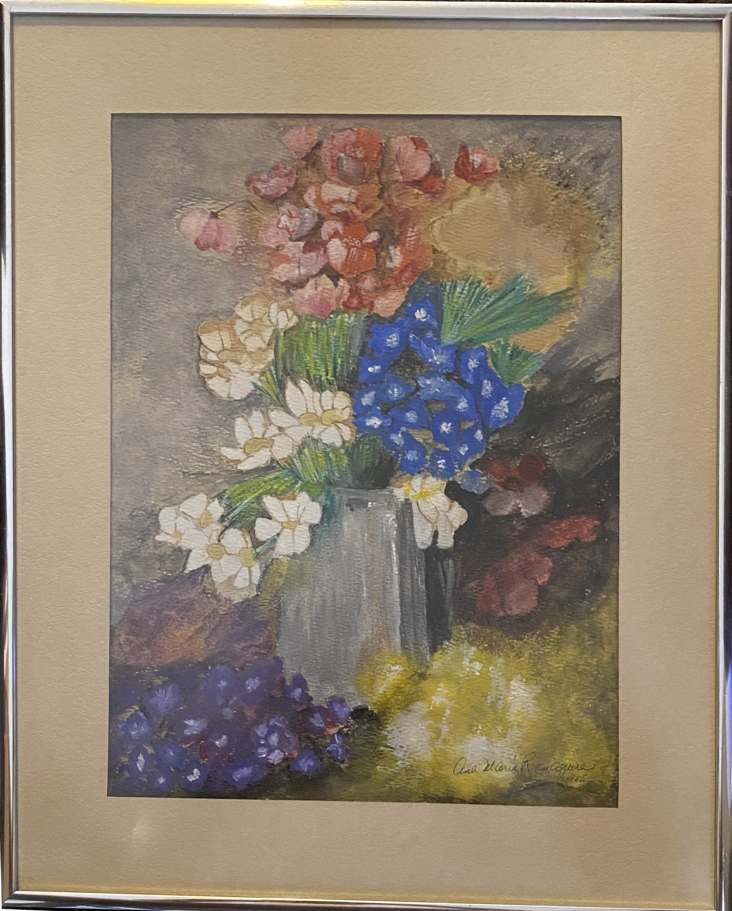
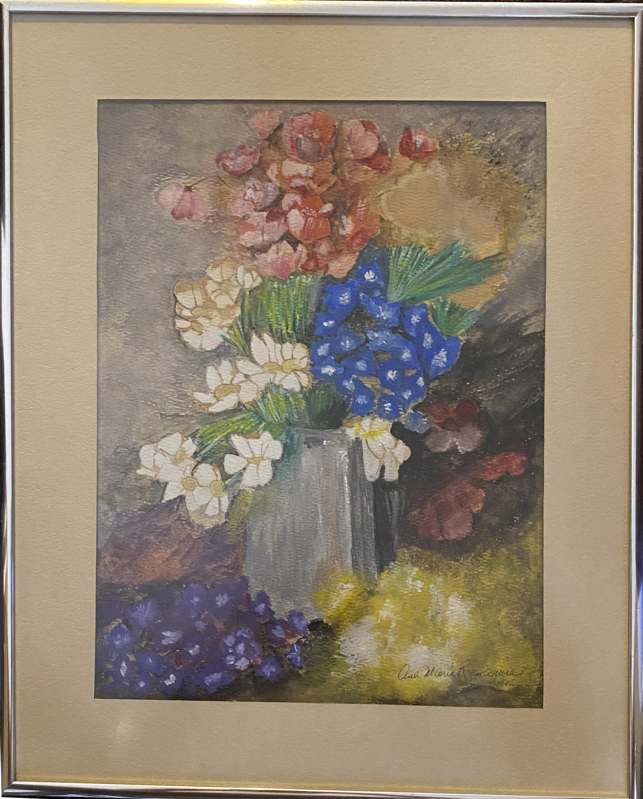
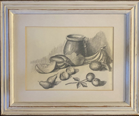
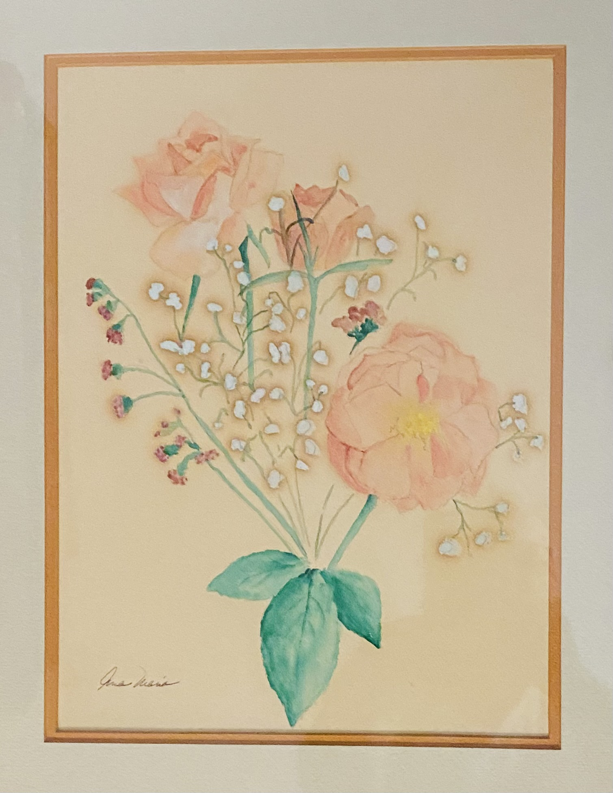
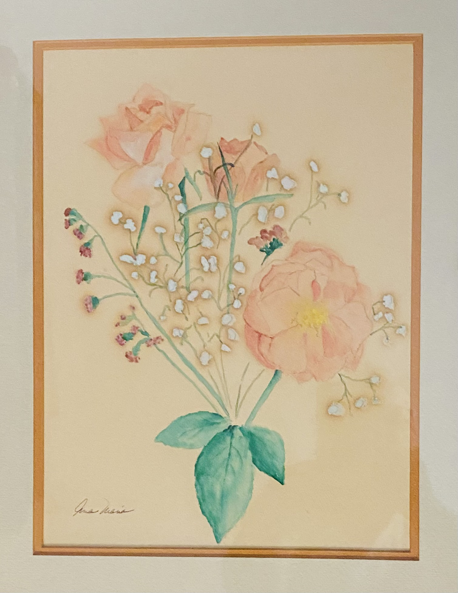
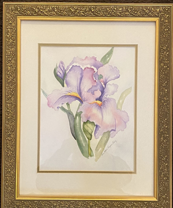
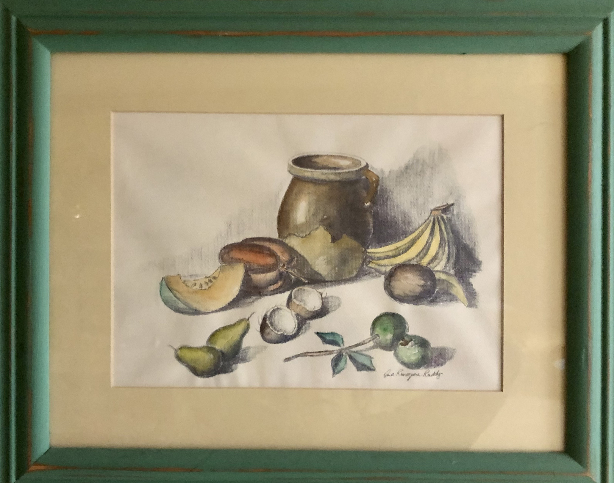
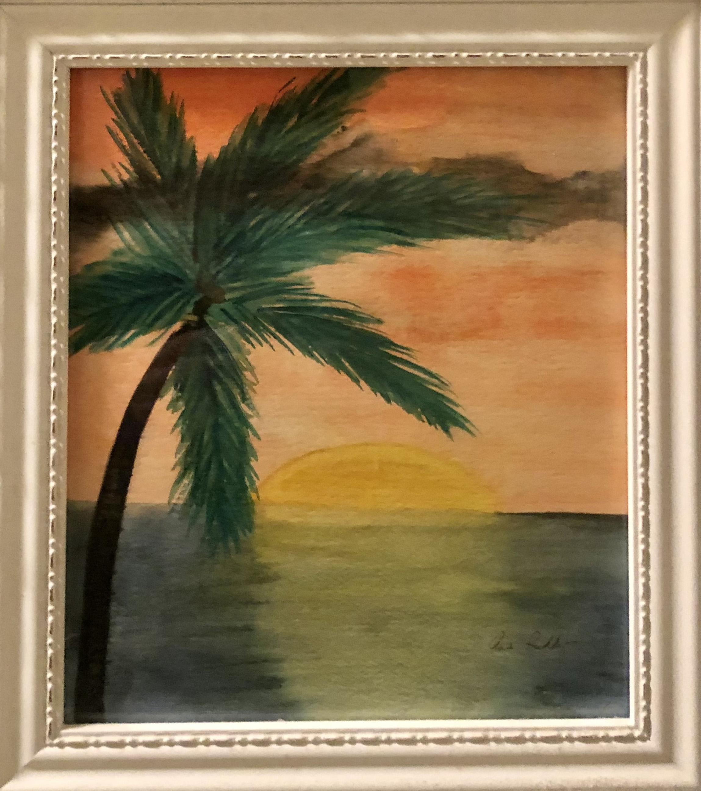

Ana María Romaguera~Casablanca
A Portrait of the Artist
An early talent as an Artist in painting.
The Romaguera's were from Puerto Rico, However, Ana Maria Romaguera was born in Cali, Valle de Cauca, Colombia where her parents, Mariano Romaguera and Viginia Casablanca, lived while Mariano worked as an engineer in a sugar mill.
She was still a young girl when the family returned to Puerto Rico. Ana graduated from University of Puerto Rico,Mayaguez Campus. She obtained her Master's Degree in Business at Babson College in Boston and began work at Allen Group in Fajardo, Puerto Rico in Production Scheduling. She worked later for Ely Lillyin Carolina, Puerto Rico and then as Director of Materials at the AyersWyeth plant in Guyama, Puerto Rico. In 1994, when the family moved to Union City, Tennessee, Ana did consulting work at Superior Fireplace and then settled down as a housewife to raise her son Michael Gerard.
Ana as a young girl was a talented artist and continued to produce paintings throughout her life.
Ana was dicovered with breast cancer in 2001 and was given a year to live. For seven years she fought against the disease and with a good will and in good humor and a determination to raise Michael Gerard to become an Adult. Her life, but never her determination, gave out April 23, 2008, and in company of her family, in Union City, Ana María passed on peacefully to meet her maker. Ana is Buried in Mayagüez, Puerto Rico.
Early Charcoal sketches


Paintings from 1977


Paintings and Sketches done prior to her Marriage


 

 
Paintings done after our marriage in 1990
 

 



Paintings used as Cards
p>